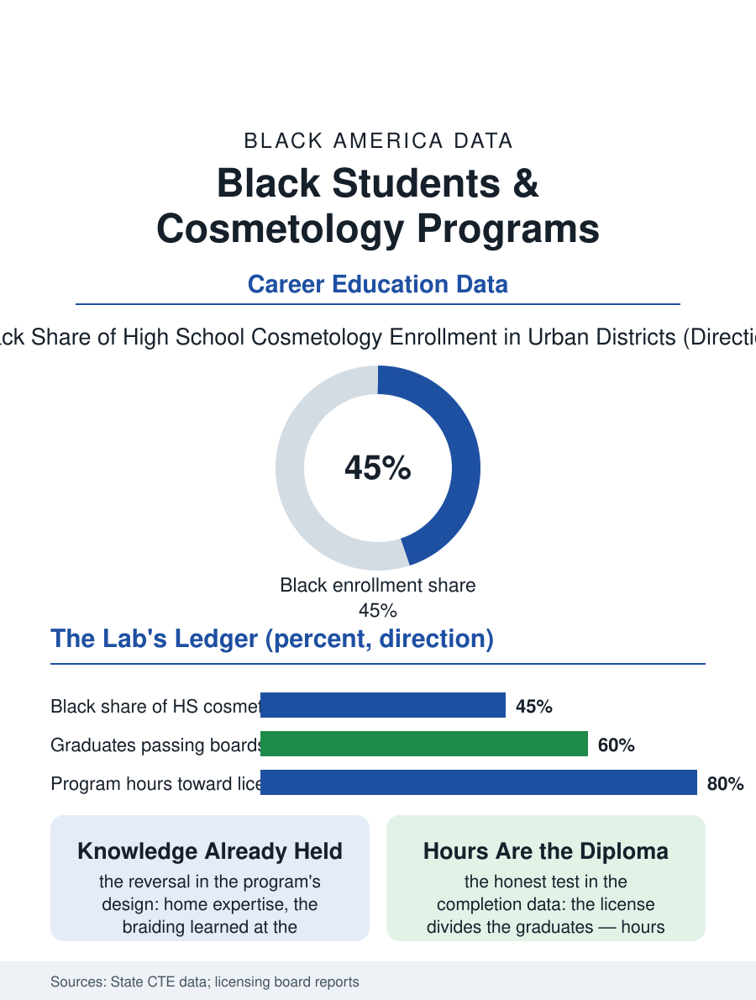

Black Education
The Culture's Classroom: Black Students and Cosmetology Programs
The kitchen table's knowledge enters school to be licensed, in the lab that runs the neighborhood's beauty shop on Saturdays. The cosmetology file.

Cosmetology is the career and technical education file's most culturally native program: the high school cosmetology lab converts the beauty culture's home knowledge into the license's first hours, and its enrollment, heavily Black and female in the districts that offer it, is among the CTE programs with the clearest line from the classroom to the chair. This article reads the cosmetology program file.
The Lab as the First Salon
The program's structure is the license's own: the state board's hours, a thousand or more in most states, accumulated in the school lab's clinic, where the public is served at the school prices by the students under the instructor's license, so that the high school program is a working salon whose clientele is the neighborhood itself, the file's practicum being the community's service in the pattern of the health academy's rotations. The enrollment's demographics are the program's distinction and the tracking debate's exhibit in one: the cosmetology lab's students are the CTE file's most female and, in the urban districts, most Black cohort, a concentration the critics read as the channeling of the college-bound and the defenders read as the culture's own economy claiming its classroom, the argument being settled, as the file's outcome data insist, graduate by graduate, the license's earners against the dropouts of the general track whose alternative the lab was. The product knowledge file inside the lab deserves its line, because the student's fluency in the chemistry of the relaxer and the color, and in the product lines formulated for the texture the industry stocked last, is a scientific literacy the general curriculum rarely credits, taught here at the level the client's scalp requires, which is to say at the level of consequence. The shop management rotation, the students running the clinic's book and its inventory in their final term, is the program's acknowledgment that the license is the beginning of the business file rather than its end.
Hours, Boards, and the Chair's Rent
The completion file is the program's honest test: the student must accumulate the hours across the school years the schedule allows and pass the board's examination, whose pass rates by the demographics of the licensure file run in that file's pattern, so that the program's graduates divide into the licensed, the nearly, and the hours-abandoned, with the summer and evening completions being the difference the districts that fund them can show in their licensure counts. The economics awaiting the licensee are the chair file's own, the booth rent and the book, and the program's business curriculum, where it exists, is the file's frontier, the difference between the stylist and the salon owner being, as the business file records, the bookkeeping the lab rarely teaches. The instructor is the program's linchpin in the pattern of the trade files, the master stylist teaching at the school's salary against the chair's earnings, a recruitment whose difficulty the districts' vacancy data record in the trade subjects generally.
The Culture's Classroom
The cosmetology file closes on the program's meaning in the school's own ecology, because the lab is the one classroom where the students' home expertise is the curriculum's foundation, the braiding and the pressing learned at the kitchen table entering the school as prior knowledge to be licensed rather than ignorance to be corrected, a reversal of the usual CTE transaction whose effect on the students' standing in the building the qualitative literature records with unusual warmth. The program's critics and defenders share the file's closing measure, which is not the enrollment's composition but the license's and the chair's five years on: the graduate in her own suite, trained in the school's lab and the culture's kitchen in one education, is the program's argument completed. The boards count the licenses each year. The file's last entry is the clinic's Saturday, the neighborhood in the school lab's chairs and the students in their smocks taking the appointments, the high school running, for that morning, the community's beauty shop entire, which is what it was always for. The clinic's price list, posted at the school's door at the neighborhood's rates, is the program's advertisement and its ethics in one document. The door's list teaches the first lesson: everyone is welcome at the school's prices.
More in Black Education
Black Educational Attainment: High School Parity, the College Gap
About 89 percent of Black adults hold a high school diploma and one in four holds a bachelor's degree or higher — the attainment ladder, the college completion gap, and the generational trend.
Historically Black Colleges and Universities: Enrollment and Degrees
More than 100 HBCUs enroll roughly 290,000 students and award about one in six Black bachelor's degrees — an outsized share from a small sector. The federal education data.
Black College Enrollment: 2.4 Million Students
About 2.4 million Black students are enrolled in American colleges — nearly two-thirds of them women. The NCES enrollment data by sector, level, and trend.
Source: State career and technical education enrollment data; state board of cosmetology school program reports.